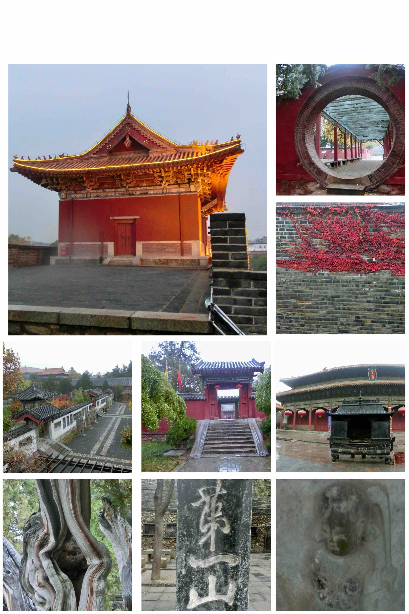

登完泰山后不能错过的另一个景点就是岱庙。泰山被称为“众山之祖, 岱宗之峻”, 诗圣杜甫也在《望岳》中第一句便问“岱宗夫如何”。岱即泰山, 岱庙则是古时帝王进行泰山祭祀的地方。
进来抬眼看到第一道大门便是正阳门, 那气势一点也不输北京故宫前门的同名兄弟。里面的建筑也是雄伟端庄, 飞檐亭角, 处处透露出皇家庙宇的气势。东御座(图5)是乾隆的行宫, 里面的竹林凸显清新雅气。龟趺(fū)碑上诉说着千年的故事, 其中一块大金重修东岳庙之碑, 记载了当年一场大火的情景和重修经过。四周的围墙拓满了碑文, 而印象最深的是当中一块米芾所书的“第一山”(图8), 尽显磅礴大气之势。宋天贶(kuàng)殿(图6), 铁塔铜亭, 最早的秦代石刻, 每到一处都要驻足细细的欣赏一番。有一个宋石刻画上的捶丸图(图9)反映的捶丸运动, 据说是中国古代的高尔夫球运动。

岱庙里古树参天, 出名的当属唐槐汉柏。尤其汉柏里的连理柏, 据说是汉武帝当年种下的, 距今已有2100多年了, 乖乖隆地咚, 看来生命还是在于静止啊! 另外一株有趣的汉柏名叫“赤眉斧痕”, 据说当年赤眉起义军想砍伐此树, 但斧落之处, 见树流血不止, 因而罢手, 而斧痕留存至今。不过我当时也没注意到底斧痕在哪里。
岱庙四周的城墙可以上去走走, 漫步其间, 悠然自得, 一扫登泰山的疲乏。俯瞰岱庙更觉建筑庭院、亭台楼阁、树石竹碑、一草一木都错落有致。我当时带了三脚架和单反, 趁着无人, 又是一通骚操作自拍。城墙的角楼非常漂亮, 我一直捱到亮灯, 拍下了美美的灯光图才依依不舍的离开, 赶晚上的火车回京。